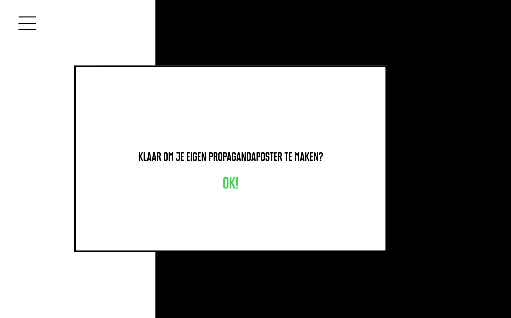

Project
Ontwerpen 2
"Dit project is een voortzetting van Project Ontwerpen 1. Hier was het de bedoeling het eerste project door te ontwikkelen, digitaal en interactief te maken. Hierbij vooral lettende op de grid, kleur en interactie binnen deze interface".
